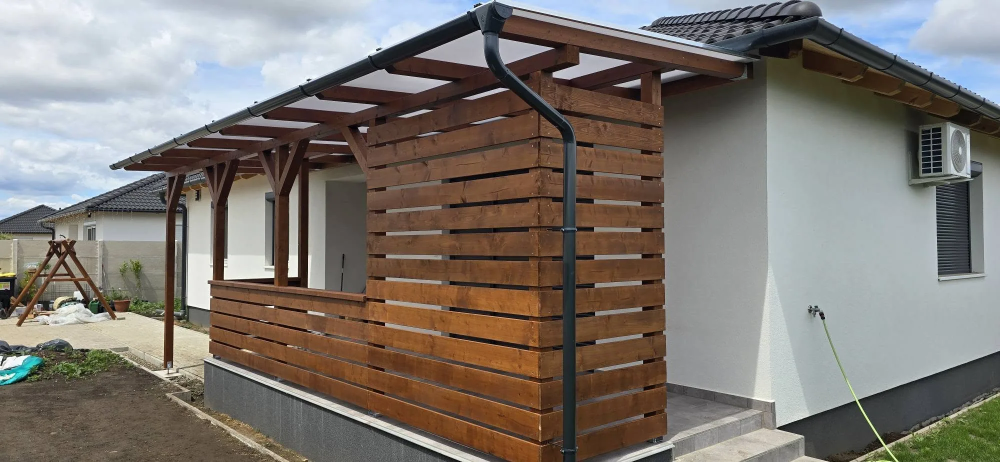
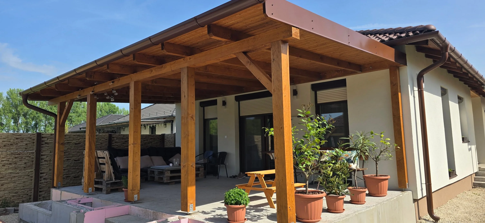
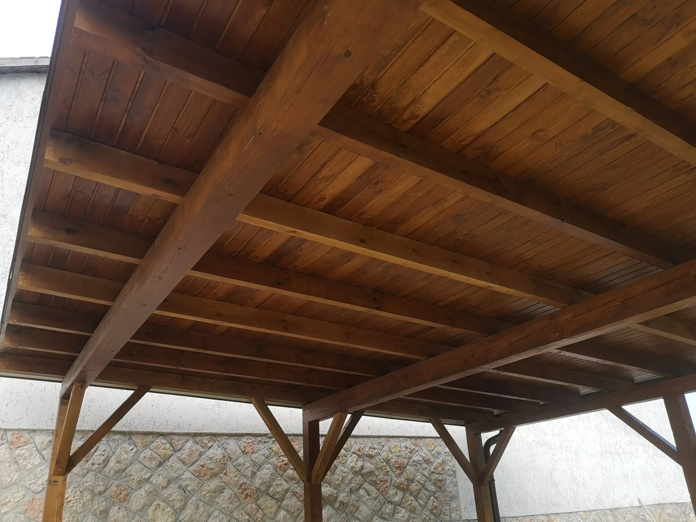

Kézzel fogható minőség a felméréstől a kivitelezésig.
A Fazekas Faépítmények egy családi vállalkozás, amely faszerkezetes fedések építésével foglalkozik Győr környékén. Minden munkánknál fontos a megbízható kivitelezés, az igényes megjelenés és a hosszú távon is tartós szerkezet.
Legyen szó teraszfedésről, pergoláról vagy más kültéri faszerkezetről, a célunk olyan megoldást készíteni, amely praktikusan használható és szépen illeszkedik az otthonodhoz.


01 — VALÓDI MUNKÁK
Nem katalógusból dolgozunk. A helyszínhez, az otthonhoz és hozzád tervezünk.
Nézd meg a projektjeinketFaszerkezetes megoldások otthonokra és kertekbe
Pergolák és árnyékolók
Elegáns, árnyékot adó szerkezetek teraszokhoz, pihenőrészekhez és igényes udvari terekhez — méretre szabva.
Teraszfedések
Praktikus és időtálló fedések, amelyek minden évszakban kényelmesebbé teszik a kültéri életteret.
Előtetők
Bejárati és ajtó feletti előtetők, amelyek megóvják a nyílászárókat az időjárástól és rendezett megjelenést adnak.
Kocsibeállók & garázs
Masszív, jól átgondolt szerkezetek, amelyek védelmet adnak az autónak és rendezett összképet teremtenek.
Kerti kiülők & pavilonok
Hangulatos, fedett pihenőhelyek a kertbe — egyedi tervezésű kiülők, pavilonok és nyári konyhák.
Kerti & szerszámtárolók
Egyedi méretű kerti tárolók és szerszámtárolók — praktikus rend a kertben, a helyszínhez igazítva.
Faházak & mobilházak
Könnyűszerkezetes faházak és mobilházak építése — tartós, igényes megoldás kiegészítő vagy önálló otthonnak.
Polikarbonát csere & javítás
Régi, elhasználódott polikarbonát fedés cseréje és javítása meglévő fém vagy fa szerkezetre.

Rétegragasztott fa (BSH) — generációknak épül.
A rétegragasztott fa nem vetemedik és nem reped meg az évek alatt, mint a hagyományos szerkezeti fa. Stabil, méretpontos és esztétikus felület — értékálló befektetés, amely évtizedekig szépen tartja magát.
- Mérettartó, nem csavarodik be
- Magas teherbírás, karcsúbb szerkezet
- Igényes, modern megjelenés
Nem mindegy, milyen polikarbonát kerül a tetődre
A buszmegállók olcsó, gyakran szakszerűtlenül beépített lemezei adták a polikarbonát rossz hírét. Mi a minőségi, hőtükrös anyagokkal dolgozunk — hogy nyáron se kelljen menekülni a fedés alól.
Hőtükrös opál
A 16 mm-es hőtükrös opál visszaveri a napsugárzás hőjét, így a fedés alatt nem alakul ki „üvegházhatás” — érezhetően hűvösebb marad a kánikulában is.
Exolon IQ Relax — az okos lemez
A nap beesési szöge szerint szabályoz: nyáron, magas napállásnál visszaveri a meleget, télen, alacsony szögnél alávezeti. A polikarbonátok csúcsa.
Törhetetlen & UV-álló
Jégeső, hóteher, erős szél: a polikarbonát gyakorlatilag törhetetlen, miközben a káros UV-sugárzás nagy részét megszűri. Védi a bútort, a növényt és a családot.
Csendes, precíz beépítés
A bosszantó pattogás oka a hiányzó gumi alátét. Nálunk minden szarufára kerül — a hőtáguláskor nincs ropogás, csak nyugalom a fedés alatt.
Átlátható együttműködés az első egyeztetéstől a kész fedésig
Helyszíni felmérés
Előzetes egyeztetés után személyesen felmérjük a helyszínt és átbeszéljük az egyedi igényeket és lehetőségeket.
Tervezés
Kialakul a megfelelő szerkezeti megoldás, a tökéletes anyaghasználat és a kívánt végső megjelenés.
Kivitelezés
Gondos kivitelezés és precíz beépítés, hogy az elkészült szerkezet hosszú távon is megbízható és gyönyörű legyen.
Miért dolgoznak velünk újra és újra az ügyfeleink?
Gyors és precíz munkavégzés
Határidőre elkészülünk, és a munka minősége nem kerül kompromisszumba. Amit megígérünk, azt teljesítjük.
Családi vállalkozás
Nem alvállalkozók, hanem mi magunk végezzük a munkát. Személyes felelősséggel és odafigyeléssel minden projektnél.
Nulla előleg
Fizetés csak a munka végeztével. Az elkészült munkát fizeted ki.
Anyagkereskedelem-mentes árak
Tisztességes, átlátható árazás. Nem keresünk az anyagon.
Ingyenes helyszíni felmérés
Győr és vonzáskörzetében ingyenesen kimegyünk, felmérjük a helyszínt és személyre szabott ajánlatot adunk.
Rétegragasztott faanyag (BSH)
Nem vetemedik, nem reped meg az évek alatt. Modern, esztétikus felület — értékálló befektetés generációknak.
A puszta udvartól a kész fedésig
Húzd el a csúszkát, és nézd meg, mekkora különbséget jelent egy jól megtervezett szerkezet.
Munkák, amelyek magukért beszélnek
Valódi otthonok, egyedi igények, gondos kivitelezés. Kattints a képekre a nagyításhoz.
Mit mondanak rólunk ügyfeleink?
Büszkék vagyunk arra, hogy megrendelőink elégedetten tekintenek vissza az együttműködésre.
„Köszönjük szépen a munkátokat mégegyszer! 😊 Szuper lett! Ha valaki hasonlóban gondolkodik, csak ajánlani tudjuk!"
„Ezt a csapatot csak ajánlani tudom. Pericízek, pontosak és korrektek. A munkájuk hibátlan, konstruktívak és nyitottak. Mindent megoldottak amit kértem, pedig nem szokványos dolog volt. Amikor igérték akkor küldték az árajánlatot és amikor igérték jöttek és dolgoztak."
„Csak ajánlani tudom őket. Szép munkát végeznek, precízek, pontosak."
„Precíz munka, korrekt ár! 🤙"
„Nekünk már készítettek egy kocsibeállót, és egy teraszfedést is. A munka és az ár mondhatom a legjobb. Minőségi kivitelezés, korrekt áron. Mindenkinek csak ajánlani tudom őket, aki hasonlóban gondolkodik."
„Keményen és precízen dolgoztak, nagyon jó gépjárműbeállót építettek. Munkájuk alapján ajánlani tudom azoknak, akik építtetni akarnak — bátran forduljanak feléjük megrendeléssel."
„Köszönjük a profi munkátokat! 🙏🏼 Imádjuk! Csak ajánlani tudom mindenkinek!"
„Csodálatos lett! Köszönjük szépen! Csak ajánlani tudom! Korrekt, gyors és szép munka!"
Győr és környéke, kb. 50 km-es körzetben
Győrből indulunk, és a környező településekre is kijárunk a helyszíni felmérésre. Ha a listán nem szerepel a községed, akkor is keress — egyeztetünk.
- Győr
- Győrújbarát
- Tényő
- Pannonhalma
- Tét
- Abda
- Öttevény
- Kunsziget
- Nyúl
- Écs
- Gyirmót
- Ménfőcsanak
- Mosonmagyaróvár
- Csorna
- Rábapatona
- + környező falvak
Győr vonzáskörzetében díjmentesen kimegyünk, felmérjük a helyszínt és személyre szabott ajánlatot adunk.
Időpontot kérekGyakori kérdések
A leggyakrabban felmerülő kérdések — ha a tiéd nincs köztük, keress bizalommal.
Mennyibe kerül egy teraszfedés vagy pergola?
Minden munka egyedi, ezért a pontos árat helyszíni felmérés után, személyre szabott ajánlatban adjuk meg. A felmérés Győr és vonzáskörzetében ingyenes, és nem köteleződsz el vele semmire.
Kell előleget fizetni?
Nem. Nulla előleggel dolgozunk — a fizetés a munka elkészültével történik, az elkészült munkát fizeted ki.
Milyen területen vállaltok munkát?
Győr és kb. 50 km-es körzetében dolgozunk, többek között Győrújbarát, Tét, Pannonhalma, Mosonmagyaróvár, Csorna és a környező falvak területén. Ha a községed nincs a listán, akkor is keress — egyeztetünk.
Miért rétegragasztott fát (BSH) használtok?
Mert a rétegragasztott fa nem vetemedik és nem reped meg az évek alatt, mint a hagyományos szerkezeti fa. Stabil, méretpontos és esztétikus — értékálló befektetés, amely generációkon át szépen tartja magát.
Milyen tetőfedés közül választhatok?
Több megoldás közül választhatsz: polikarbonát (akár hőtükrös opál vagy Exolon IQ Relax „okos” lemez), zsindely, cserép vagy lemezfedés. A felmérésen segítünk kiválasztani az igényeidhez illőt.
Ingyenes a helyszíni felmérés?
Igen. Győr és vonzáskörzetében díjmentesen kimegyünk, felmérjük a helyszínt, és személyre szabott árajánlatot adunk — kötöttségek nélkül.
Induljon egy jó beszélgetéssel.
Ha faszerkezetes fedést, pergolát vagy más kültéri megoldást szeretnél Győr környékén, keress bizalommal — egyeztessünk egy időpontot a helyszíni konzultációra.
06 30 278 8662 fazekasfaepitmenyek@gmail.com